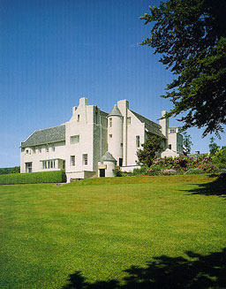
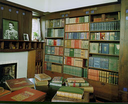
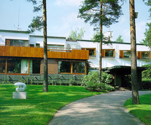
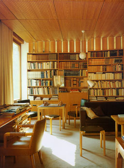

Hill house , Helensburgh, Scotland, 1903
Charles Rennie Mackintosh

Houses of the Century
Anatxu Zabalbeascoa |
The house stands on the summit of a hill with
views on the garden also designed by Mackintosh. It is a combination
of Arts & Crafts and the robust forms of a Scottish castle.
Mackintosh has designed the house including the furnishing and
all small details. He has approached each room of the house separately.
The proportion of the furnishing complete with the proportion
of the spaces and windows. On the right picture you see daylight
brushing past the bookcase in the house.
|
 |
Villa Mairea, Noormarkku, Finland 1937
Alvar Aalto

Houses of the Century
Anatxu Zabalbeascoa |
The house is situated on the crest of a hill
in the middle of a clearing in the forest. The house contains
different parts with different functions characterised by the
use of different materials which give the house a modern as well
a traditional look. On the picture on the right a large window
in the left wall provides for direct sunlight. According to the
form of the room (the sloping ceiling) there is no dark corner
nearby the transition from ceiling into the window-wall. |
 |